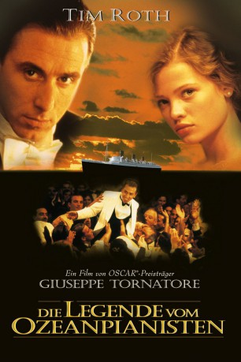

#4632 Die Legende vom Ozeanpianisten
Auszeichnungen: 1 GoldenGlobes gewonnen
 
 IMDB-Wertung: 8.1 / 10
IMDB-Wertung: 8.1 / 10  Metascore: 0
Metascore: 0 
Italienische Komödie von Giuseppe Tornatore, die am Anfang des 20. Jahrhunderts angesiedelt ist. Im Jahre 1900 findet der Seemann Danny Boodmann (Bill Nun) eine Kiste mit der Aufschrift "T.D. Lemon" in der sich ein Baby befindet, das er folglich Danny Boodmann T.D. Lemon 1900 nennt. Der kleine Junge wird im Heizraum des Schiffes grossgezogen und entwickelt sich zu einem der besten Pianisten.
Jahr: 1998
Dauer: 120 Minuten
FSK: 6
Land: Italien Studio: Concorde FilmverleihTonspuren: DD5.1 - ,
Untertitel: Deutsch,
Auflösung: SD (720x430) Größe: 1566 MB
Genre: Drama, Musik, Liebe
Regisseur:  Giuseppe Tornatore
Giuseppe Tornatore
Drehbuch: Nadine Labaki
Soundtrack:
Darsteller:
 Tim Roth als Danny Boodmann T.D. Lemon Nineteen Hundred '1900'
Tim Roth als Danny Boodmann T.D. Lemon Nineteen Hundred '1900' Pruitt Taylor Vince als Max Tooney
Pruitt Taylor Vince als Max Tooney Bill Nunn als Danny Boodmann
Bill Nunn als Danny Boodmann Clarence Williams III als Jelly Roll Morton
Clarence Williams III als Jelly Roll Morton Mélanie Thierry als The Girl
Mélanie Thierry als The Girl Peter Vaughan als 'Pops', the Shopkeeper
Peter Vaughan als 'Pops', the Shopkeeper- Alberto Vazquez als Mexican Stoker
- Femi Elufowoju Jr. als Black Stoker
- Roger Monk als Irish Stoker
- Sidney Cole als Musician
- Noriko Aida als Mattress Maker
- Adriano Wajskol als Drummer
- Nicola Di Pinto als
- Adrian McCourt als
 Kevin McNally als
Kevin McNally als - Gabriele Lavia als Farmer
- Niall O'Brien als Harbor Master
- Luigi De Luca als Neapolitan Stoker
- Nigel Fan als Chinese Stoker
- Leonid Zaslavski als Polish Stoker
- Bernard Padden als Boatswain
- Wilson Di Bois als Wireless Operator
- Easton Gage als Lemon - age 4
- Cory Buck als Lemon - age 8
- Norman Chancer als Impresario
 Harry Ditson als Captain Smith
Harry Ditson als Captain Smith- Andrew Dunford als Foreman
- Eamon Geoghegan als Sergeant
- Steven Luotto als Blind Helmsman
- Gianluigi Molteni als Inspector
- Vernon Nurse als Fritz Hermann
 Bryan Pringle als Civil Servant
Bryan Pringle als Civil Servant- Ivan Truol Troncoso als Stowaway
- Heathcote Williams als Doctor Klauserman
- Agostino Di Giorgio als Banjo Player
- Piero Gimondo als Clarinet Player
- Stefano Pagin als Bass Player
- Michael Supnick als Trombone
- John Armstead als
- Katy Monique Cuom als
- Emanuele Gullotto als
- Michael Koroukin als
- Masa Mbatha Opasha als
- Riccardo Pellegrino als
- Shaila Rubin als
- Beniamino Vitale als
- Paul Richard Wood als
- Anita Zagaria als
- Pierluigi Coppola als (uncredited
Datei: X:\1998\Legende vom Ozeanpianisten, Die (1998, FSK6, 720x430).mkv seit 25.10.2016
Festplatte: HD 1996-2002
 Es gibt insgesamt 86 Filme in der Gruppe '1998'
Es gibt insgesamt 86 Filme in der Gruppe '1998'